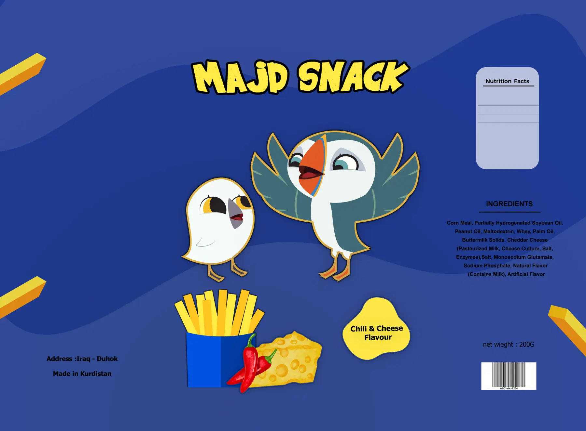

تغليف / كيس سناك
مجد سناك: نكهة
تنقرأ من بعيد.
- العميل
- مجد — دهوك
- المنتج
- سناك ذرة — جبن، وتشيلي وجبن
- الوزن
- 200 غرام
- القطع
- كيسان مفرودان، نكهتان
- دوري
- تصميم الكيسين كاملين، بما فيه شخصية القندس

01
نظرة عامة على المشروع
كيس سناك ذرة بنكهة الجبن، وزن 200 غرام، مكتوب عليه «صُنع في كوردستان — دهوك».
02
التحدي التصميمي
على الرف بيكون جنب أكياس كثيرة ملوّنة، فلازم الاسم والنكهة ينفهموا قبل ما الزبون يقرّب.
03
النهج التصميمي
- أحمر وأصفر: أعلى تباين ممكن بين الخلفية والشعار، وثنائي مألوف لمنتجات الجبن.
- شعار مرسوم بحدود سوداء: حروف عريضة غير منتظمة بإطار أسود وأبيض، فيبان الاسم حتى فوق الأحمر الغامق.
- الشخصية فوق المنتج: قندس من رسمي، جالس على كومة السناك نفسها، فالصورة الرئيسية تعرض المنتج والشخصية معًا.
- النكهة كبقعة جبن: شارة «Cheese Flavour» على شكل جبن سائل، وبقع مشابهة في الزوايا تكرّر نفس الإشارة.
- المركز فاضي للصورة: المكوّنات والباركود والعنوان والوزن على الأطراف، بعيدًا عن الواجهة.
نفس العلامة، نكهة ثانية.
- الشعار ثابت، الخلفية تتغيّر: نفس شعار MAJD SNACK الأصفر بحدوده السوداء، على أزرق غامق بدل الأحمر، فالنكهتان تبانان كعائلة واحدة على الرف.
- رسم بدل صورة: البطاطا والفلفل والجبن مرسومة بأسلوب مسطّح، بنفس أسلوب الشخصيات، بدل صورة المنتج الحقيقية في الكيس الأحمر.
- شارة نكهة بشكل حر: «Chili & Cheese Flavour» داخل شكل أصفر ناعم، مقابل بقعة الجبن في النسخة الحمراء.
- المعلومات على الطرفين: القيم الغذائية والمكوّنات والوزن يمينًا كما في الكيس الأحمر، والعنوان يسارًا، والباركود انتقل لليمين تحت الوزن.
04
المخرجات النهائية
- كيس نكهة الجبنكيس مفرود 200 غرام، النسخة الحمراء
- كيس التشيلي والجبنكيس مفرود، النسخة الزرقاء
- شخصية القندسمرسومة لكيس الجبن
05
معرض المشروع


النكهة الثانية / تشيلي وجبن



عندك منتج يحتاج تغليف؟
أرسل نوع المنتج والمقاس واللغات المطلوبة.